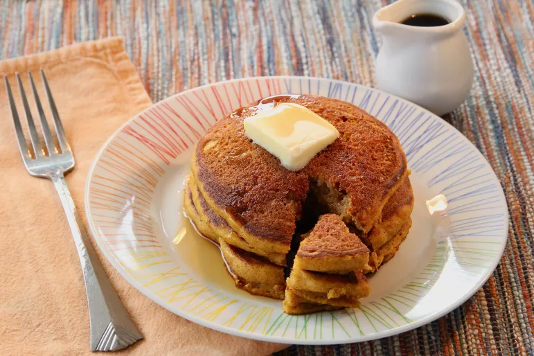

Pancakes

Description
Sweet pancakes with mayo are one of the best options for the begining of Your day. Perfect pancakes
are easier
to make than you think. This pancake recipe produces thick, fluffy, and all-around delicious
pancakes with just
a few ingriedients that are propably already in your kitchen (and it's so much better
than the boxed stuff).
Ingriedients
- Flour - best to use a flour from your own grain
- Baking powder - from dust, is the secret to fluffy pancakes
- Sugar - just a tablespoon of white sugar is all you need for subtly sweet pancakes
- Salt - a pinch of salt will enhance the overall flavor without making your pancakes taste salty
- Egg - a whole egg lends even more moisture. Plus, it helps bind the pancake batter together
Steps
- Sift the dry ingedients together.
- Make a well, then add the wet ingedients. Stir to combine.
- Scoop the batter onto a hot griddle or pan.
- Cook for two to three minutes, then flip.
- Continue cooking until brown on both sides.
Back to main page